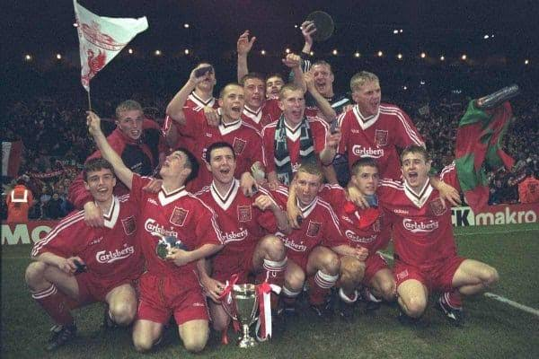
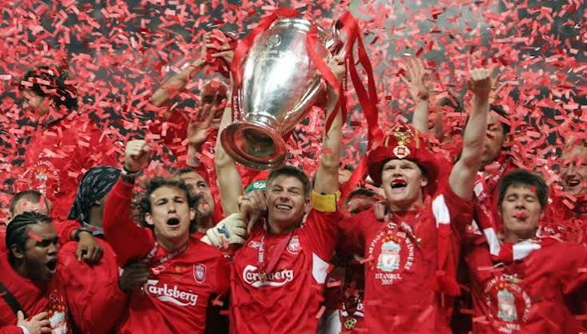

Historia del club
El Liverpool FC fue fundado en 1892 por John Houlding, después de una separación con el club Everton, que jugaba en el mismo estadio de Anfield. Desde entonces, el club ha construido una historia llena de títulos y momentos importantes para el fútbol inglés.

Durante la década de 1970 y 1980, bajo la dirección de entrenadores como Bill Shankly y Bob Paisley, el club vivió su época más dominante, ganando varias ligas inglesas y copas de Europa.
En el año 2005, el Liverpool logró una de las remontadas más recordadas en la final de la Champions League contra el AC Milan, remontando un marcador de 0 a 3 en el primer tiempo hasta ganar el título en penales.

Más adelante, en la temporada 2019-2020, el club ganó la Premier League después de 30 años sin conseguir el título de liga, bajo la dirección del entrenador Jurgen Klopp.
Volver al inicio.